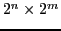
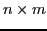

Next: PeMM Definition
Up: Fast, Approximate Error Prediction
Previous: Introduction
Probabilistic Error Masking Matrix
Faults within logic circuits are masked with certain probability before propagating to the circuits outputs as visible errors. Such masking effects happen due to several reasons which can be the following:
- Logic primitives performing algorithmic calculations have inherent ability of masking faults at input, giving unchanged/error-free output.
- Micro-architecture features such as inter-stage data bypass can neglect the faulty input by replacing it with fault free input as a feedback from other pipeline stages.
- Faulty resources of processor such as registers and memory elements can never be read by computational circuit, giving always a fault free output.
- The faulty value of storage element or wires are overwritten before being read.
PTM [24] calculates the error probability of circuits' output by considering the logic circuits as a black box with faults happened inside logic gates. The approach suffers from scalability problem for large circuits since the size of the PTM is

where n and m imply the total number of bits for inputs and outputs. Besides, for large scale circuits the derivation of PTM can be extremely time consuming since PTMs of individual logic gates needs to be accumulated.
We introduce Probabilistic error Masking Matrix (PeMM) to address the scalability issue, where the faults reside in circuit inputs.In contrast to PTM, PeMM has the size of

for a circuit with n bits input and m bits output. The size of matrix can be further reduced depending on the focusing scope of error existence. For instance, n and m are reduced to number of input and output signals when signal level error existence is considered.
Subsections
Next: PeMM Definition
Up: Fast, Approximate Error Prediction
Previous: Introduction
Zheng Wang A Chattopadhyay
2014-07-16